1.基本知识
1.1 优化问题3个基本要素：优化变量、目标函数、约束条件
X=[x1,x2,…,xn]
min f(X)
s.t.
f(X) = hk(X)=0 ,k=1,2,…l
f(X) = gk(X)<=0 ,k=1,2,…m
引申：无约束优化、有约束优化、等式约束、不等式约束、线性优化、非线性优化。各类问题都有特定的解决办法
1.2 优化问题基本解决办法：解析解法、数值解法
- 解析解法：知道目标函数的具体形式，严格按照数学公式推导求解
- 数值解法：拟合思想。工具：泰勒展开(近似)、迭代求解(迭代)
实际应用中最广泛计算简单的当然是数值解法中的迭代法，也叫数学规划法。
1.3 迭代法的3个基本要素
- 初始值、迭代方向、步长
- 收敛性
- 终止条件：
- 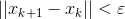
- 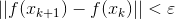 或者 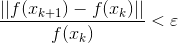
- 某次迭代点的目标函数的梯度已经到达充分小时：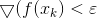
1.4 函数在某一点的梯度方向变换最多上升最快、在负梯度方向下降最快、函数在某一点垂直于梯度方向的方向称为法线方向，将函数分为上升方向和下降方向
- 导数
- 偏导数
- 方向导数：方向导数是偏导数的推广、偏导数是方向导数的特例
- 梯度
1.5 多元函数求函数极小值的条件
必要条件：函数对Xm处的导数必须为0。=》驻点
充分条件：G(Xm)或写H(Xm)正定。各阶主子式均>0
驻点不一定是极值点，但极值点一定是驻点
2. 无约束优化问题
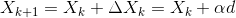 （1）
min f(X)
2.1 最速下降法
1.4 函数在某一点的梯度方向变换最多上升最快、在负梯度方向下降最快、函数在某一点垂直于梯度方向的方向称为法线方向，将函数分为上升方向和下降方向
Method1 : 最速下降法
1. 选一个初始值X0
2. 确定搜索方向= 负梯度方向
3. 确定最优步长，f(xk+1) =f(xk+ad) 其中只有a未知，利用求导求极值思想求解a
4. 是否满足停止条件
5. 否则反复2-5
key：1）迭代方向为每一个点的负梯度方向
2)两次相邻的下降方向是相互垂直的，会导致搜索线路是Z型，在接近函数极小值附近搜索速度变慢
2.2 牛顿法
拟合思想：在xk附近领域内用一个二次函数g(x)，即泰勒展开保留到二阶来替代原来的目标函数f(x)。并且将g(x)的极小值作为目标函数f(x)的下一个迭代点。
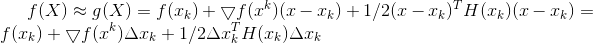
要求解g(x)的极小值点：参考1.5 多元函数求函数极小值的条件
通过必要条件求驻点：就是对g(x)求导，求出驻点：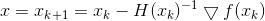
再对比 ，所以牛顿法就是
搜索方向 = 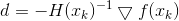
搜索步长 = a = 1
Method2 : 牛顿法
1. 选一个初始值X0
2. 计算gradent 和 hession matrix
3. 确定下一个迭代点
本质：搜索方向 = ，搜索步长 = 1
4. 是否满足停止条件
5. 否则反复2-5
Key:1）迭代方向不一定沿梯度的负方向，没有朝着下降方向搜索的思想，所以对某些非二次项函数，有时候迭代结果会使得函数值上升
2) 计算量大，要计算gradent 和 hession matrix 以及 H的逆
3) H 有可能是奇异的，H矩阵不可逆
2.3 阻尼牛顿
Method3 : 阻尼牛顿法
1. 选一个初始值X0
2. 计算gradent 和 hession matrix
3. 确定搜索方向 =
4. 搜索步长 a . 不再为1，而是利用函数极值条件求导求出最优步长
5. 是否满足停止条件
6. 否则反复2-5
2.4 balabala：无约束优化问题，还要好多其他方法，上面的都是间接方法，还有利用目标函数值来就求解的直接方法，大家都懂不多说
3. 最小二乘
非线性最小二乘问题来自于非线性回归，即通过观察自变量和因变量数据，求非线性目标函数的系数参数，使得函数模型与观测量尽量相似
3.1 我们面临问题举例
BA问题描述：已经相机的pose、3d点。通过针孔模型我们模型可以算出对应2d点位置，这叫预测。根据匹配我们得到实际的2d点位置，这叫观测。我们的目的是为了调整pose和3d位置，使得优化后的pose和3d点能更好的满足实际观测的情况，使得预测和观测之间的差距不至于太远。
3.2 最小二乘法的目标：求误差的最小平方和
这里的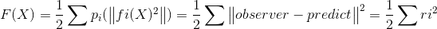
F: object function
F: cost function
P: loss function
残差
3.3 最小二乘的基本解法和分类
- 线性：残差(residual)是线性的（ri是线性的）
- 非线性：残差(residual)是非线性的，ri是非线性的
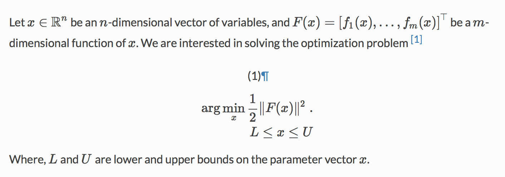
（1）线性的：直接套用公式
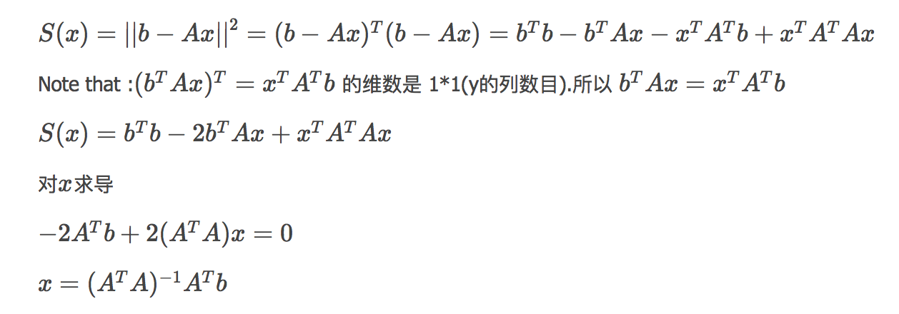
（2）非线性的：利用2 中无约束优化的思想
[Reference: ceres]
3.4 最小二乘-线性搜索-line search
参考2 无约束优化问题的求解方法。可以采用最速下降法、牛顿法、阻尼牛顿法。需要唯一需要注意的是这里的fi(X)是一个 平方函数 fi(X) = ri^2
所以 涉及的梯度和H矩阵都是针对 ri^2的
3.4.1 最速下降法
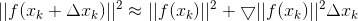
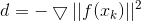
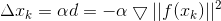
流程见第2部分 method1
3.4.2 牛顿法
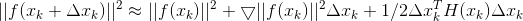
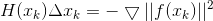
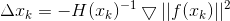
等价于Ax=b模型，线性方法的求解有很多方差，各种矩阵分解，如LU、cholesky分解等
缺陷还是计算量大，maybe H奇异不可逆
流程见第2部分 method2 or method3
梯度和海森矩阵具体求解，见笔记
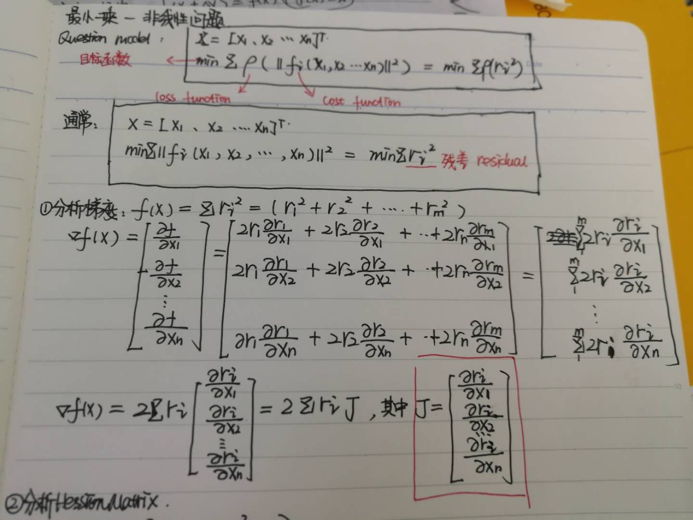
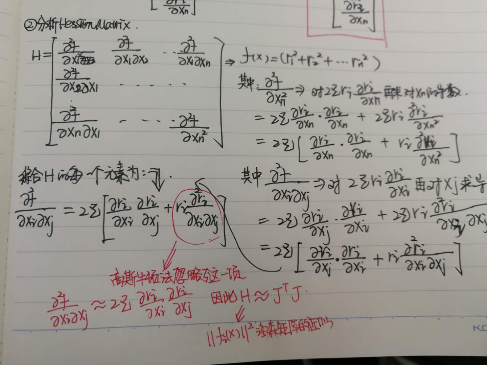
3.4.3 高斯牛顿法
高斯牛顿法解决非线性最小二乘问题的最基本方法，并且它只能处理二次函数。(使用时必须将目标函数转化为二次的)Unlike Newton’s method, the Gauss–Newton algorithm can only be used to minimize a sum of squared function values
（1）理解方式一：针对ri对ri进行泰勒展开保留到一阶，而不是||ri||^2 进行泰勒展开
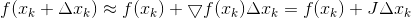
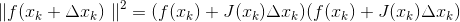
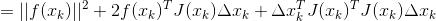 (*)
式子中都已知，需要求解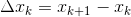 。
(*)是一个二次型函数，利用极值条件对(*)式子求导数
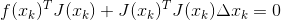
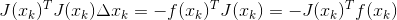 （增量方程、正规方程）
等价于Ax=b还是一个线性方法，求解这个线性方程得到得到驻点（必要条件）
，而要满足是极小值点还需要满足充分条件：二阶Hession 矩阵正定，这里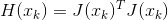
Method 4: 高斯牛顿法
1. 选择初值
2. 对第k次迭代，求ri(xk)的梯度和误差函数ri(xk)
3. 求解增量方程得到 delta x ，可以采用矩阵分解方法
4. 是否满足迭代停止条件
5. 否则得到 ，反复2-5
注意：
（1）这里的J是ri(x)的偏导数构成的梯度
（2）这里的H = J^T J ，要求是正定的，才能保证得到的 delta x是极值
（3）然而J^T J 是一个半正定矩阵，实际情况中J^T J 会出现奇异和病态到时算法稳定性差不收敛情况
（4）还是一个问题是如果求解出来的太大，就与在xk处泰勒展开的局部近似思想矛盾，不够准确也会导致不收敛-》由此引申出信頼域方法
（2）理解方式2：参考上面笔记图2.这里的 H 是真实的ri(x)^2 的H矩阵的近似，忽略了真实H矩阵中的二阶项目，用一阶代替（用J(x)TJ(x)代替H的求法，从而节省了牛顿法的计算量）.但是这里必须满足条件是二阶可忽略的前提是：ri比较小，或者 ri接近linear 这样一阶微分是常数，二阶微分为0
3.5 最小二乘-信頼域方法-trust region
3.5.1 LM方法：参考wangxi ligang之前的培训
Method5 : LM方法
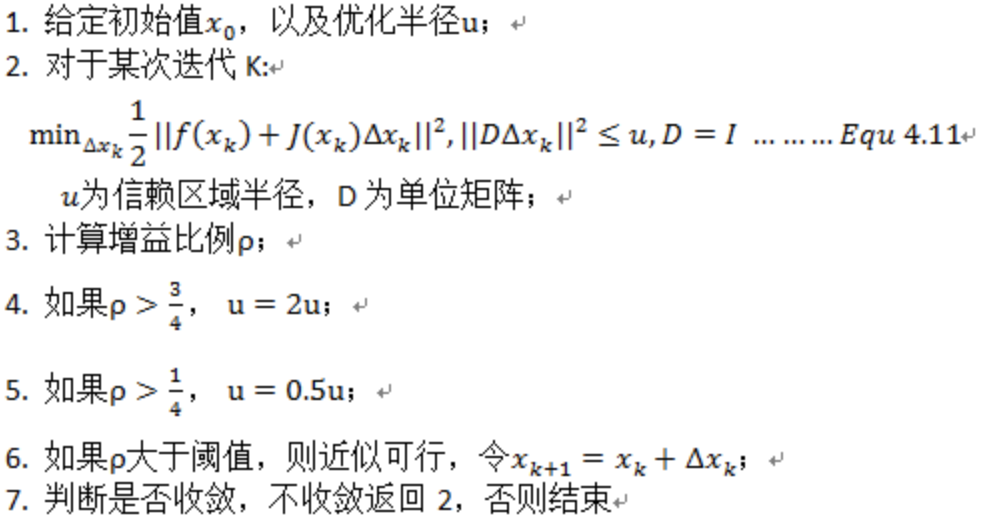
采用拉格朗日乘子将该有约束优化问题- >为无约束优化问题:
因为D=I，又有：
公式4.13就是LM算法的增量表达式。通过该式计算就可以避免掉高斯牛顿算法中出现的不收敛等问题，保证H正定
个人的理解：因为迭代法的主要思想是沿着函数下降方向走，但是高斯牛顿法求解的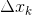 不一定能保证函数值下降，预期下降值与实际下降值不相符，就需要改变方法或者不取那个迭代点。信頼域方法就是先限定一个范围让只能在这个区域内，就相当于加了一个约束条件，这个范围应该一开始比较小，因为是近似展开。
然后在信頼域中
实际下降的值： 
近似理论下降的值：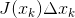
当实际下降的值 > 近似理论下降的值 ：下降比较好，还可以放宽信頼域范围这样：加快收敛
当实际下降的值 < 近似理论下降的值 ：说明近似比较差，再减小信頼域保证：能够收敛
比值= 实际下降 / 预测下降
信頼域方法的思想：先确定步长范围，在范围内直接找到极小值点
线搜索方法思想：先确定搜索方向，再在该方向上找最佳步长
3.5.2 dog-leg
1）traditional-dogleg：思想是利用了最速下降和高斯牛顿的结合
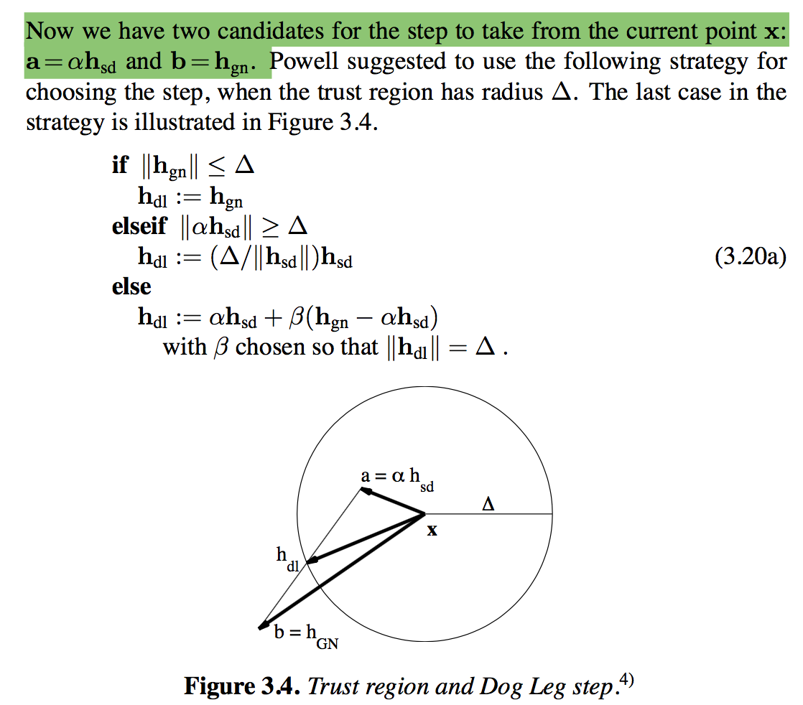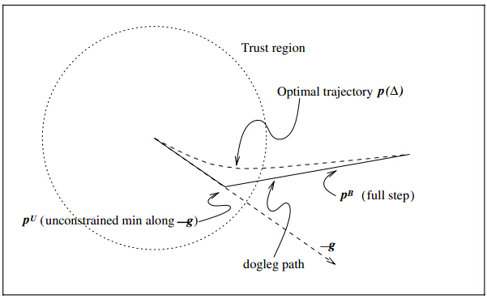
- 个人理解1：通过拉格朗日法将一个不等式约束问题转换为无约束优化问题，然后再用KKT条件可以知道信頼域范围与最优解之间的关系。就是说当最优解本来就在信頼域范围内，其实信頼域对最优解不起约束，那么最优解=就是求得的高斯牛顿的解。而当最优解在信頼域外部最优解被信頼域范围约束，在信頼域边缘上找到一个近似的最优解。
- 个人理解2：与LM相比Dogleg的关键优势在于：如果选择的信頼域大小会导致函数值实际下降量少，就是说近似的不准确，那么LM会重新减小信頼域，重新计算. 但是Dogleg 利用最速下降和高斯牛顿思想，保证得到的近似点在信頼域范围上，只需要计算高斯牛顿和柯西矢量之间的值.
还有其他dog-leg的扩展方法，此处不再讲
若高斯牛顿的结果在信頼域内，说明信頼域的约束不起作用- 若高斯牛顿结果再信頼域外，计算最速下降法，结果再信頼域外，说明沿着负梯度方向下降最多，直接取信頼域边缘上的点即可
- 若高斯牛顿结果再信頼域外，计算最速下降法，结果再信頼域内，说明沿着负梯度方向下降多，而结果又在信頼域内部，我们可以让其更向着高斯牛顿方向再下降一点点，这样子可以加快收敛，于是最优的结果在两个结果的连线上。